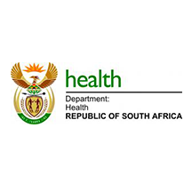

About Us
Who are we?
Fonder Npo is proposing a team of highly qualified clinicians, all of whom are currently at the forefront of South African health provision activities. With background expertise comprising over 20 years in clinical medicine, sports science, men’s reproductive health, and HIV/AIDS prevention, care and treatment, Fonder NPO prides itself in implementation of primary health care and public health programs.
Our Vision and Goals
Our primary goal is to focus on the comfort and convenience of our patients. We make this belief a reality by putting clients first, leading with exceptional ideas, doing the right thing, and giving back.. The Latest Minimally Invasive Methods possible to make your procedure simple, with minimal pain, safe with faster recovery. Fonder Npo remains passionate about making each patient’s experience the very best it can be. Fonder NPO have a friendly and caring staff and provide a confidential personalised and professional service in a private setting without long waiting times. You are assured of the most up to date, least incapacitating surgical method. We do everything possible to ensure that you make a decision that is right for you. Consultation and same-day surgery can be arranged.

Our team impact
Over the years, Fonder NPO has: Educated 80 thousand individuals through our health workshops and seminars. Provided support services to 117 families in need. Partnered with The Health Department Of South Africa to amplify our impact. For more information Contact Us 